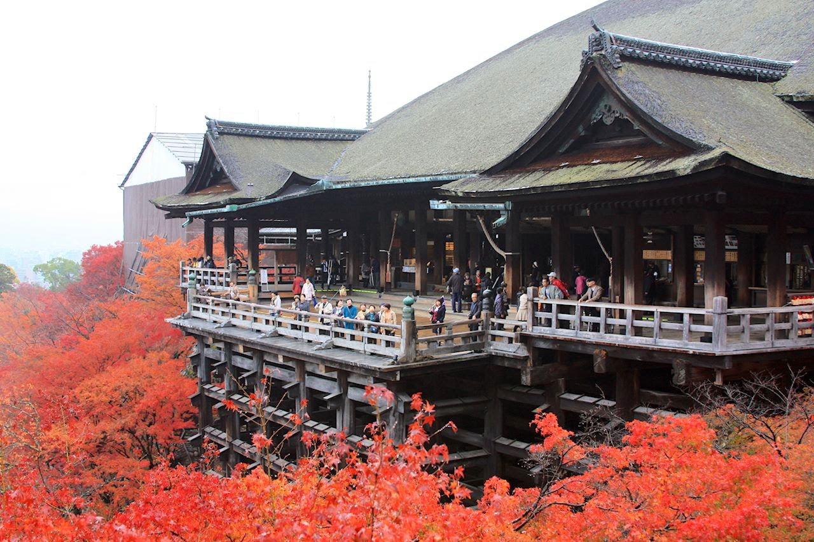

清水寺を知る
清水寺は、京都の東にあるお寺です。木の舞台、赤い門、水の流れる音。写真を見ながら、三つの場所をたどってみましょう。
本堂と京都のまち / Jordy Meow /
CC BY-SA 3.0・出典
非公式・授業用サイト / 初めて見る人のための小さなガイド
清水寺について
清水寺は、京都の東にあるお寺です。山の斜面に木の建物が立ち、その周りに木々が広がっています。
このページは、初めて清水寺のことを知る人のための案内です。難しい言葉を覚えるより、写真と短い説明から、見たい場所を見つけましょう。
清水寺は、風景を楽しむ場所であると同時に、お参りをするお寺です。
三つの見どころ


こんなところも見てみよう
形を見る
屋根の曲がり方や、木の柱。遠くから全体を見ると、建物の形に気づけます。
色を見る
赤い門と、緑の木々。同じ場所でも、季節や光によって違う色に見えます。
音を聞く
水の音や、風の音。写真には写らないものも、風景の一部です。
清水寺の写真帖
季節や場所で、見える色が変わります。

写真は撮影時の風景です。今日の様子や、花・紅葉の時期を示すものではありません。
出かける前の確認
開いている時間や料金は、変わることがあります。最新の案内は、清水寺の公式サイトで確認しましょう。